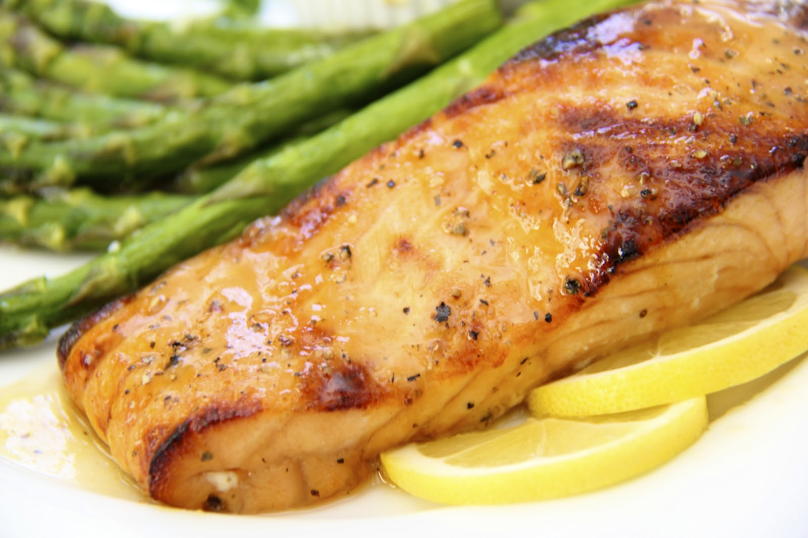

Salmon

Salmon is an incredibly nutritious food, serving as a great source of
healthy fats, protein, and micronutrients.
With this recipe we'll walk you through how to prepare a delicious honey
mustard glazed salmon sure to impress your family during the holidays!
Ingredients:
- 1 lemon sliced
- 1 three-pound salmon filet
- Freshly ground black pepper
- Kosher salt
- 1/2 cup whole-grain mustard
- 1/4 cup extra virgin olive oil
- 1/4 cup honey
- 2 cloves garlic minced
- 1/2 tsp red pepper flakes
- Fresh parsley chopped
Directions:
-
Preheat oven to 400° and grease a 9”-x-13” baking dish with cooking
spray. Place lemon slices on bottom of dish and place salmon on top.
Season with salt and pepper.
-
In a medium bowl whisk together mustard, oil, honey, garlic, and red
pepper flakes. Season with salt and pepper then pour sauce over salmon.
-
Roast salmon until cooked through and flakes easily with a fork, 20
minutes.
- Turn oven to broil and broil another 5 minutes, if desired.
- Garnish with parsley before serving